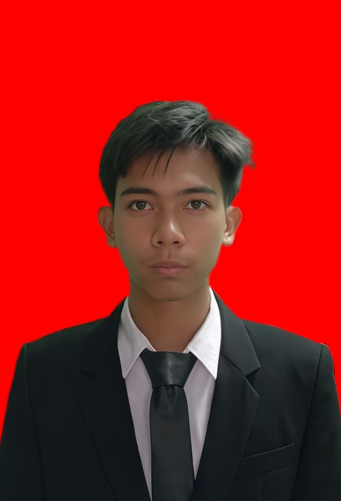

SMKS Annurmaniyah Ciledug
2022–2025Desain Komunikasi Visual (DKV)
CURRICULUM VITAE
Mahasiswa yang tertarik pada teknologi informasi, desain visual, dan pengembangan website.
Hubungi Saya
Saya memiliki latar belakang pendidikan Desain Komunikasi Visual dan minat dalam bidang teknologi informasi. Saya senang mempelajari hal baru, mengembangkan kreativitas, serta menggabungkan kemampuan desain dengan teknologi untuk menghasilkan karya yang bermanfaat.
Desain Komunikasi Visual (DKV)
Staf Divisi Media
Silakan hubungi saya melalui informasi berikut.
Email: rahmanfdlh02@gmail.com
GitHub: Profil GitHub